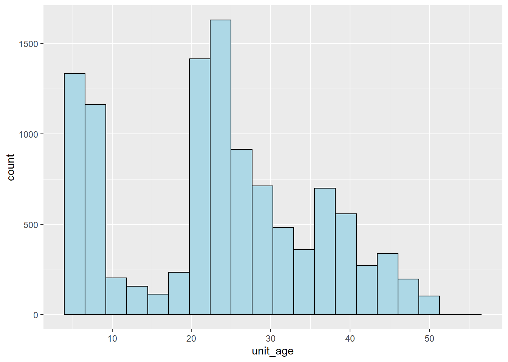

pacman::p_load(sf, sp, spdep, olsrr, SpatialML, tmap, rsample, Metrics, tidyverse, httr, jsonlite, units, matrixStats, corrplot, ggpubr, ggstatsplot, GWmodel)Takehome_Ex03 Predicting HDB Resale Prices with Geographically Weighted Machine Learning Methods
1 Setting the Scene
Housing is an essential component of household wealth worldwide. Buying a housing has always been a major investment for most people. The price of housing is affected by many factors. Some of them are global in nature such as the general economy of a country or inflation rate. Others can be more specific to the properties themselves. These factors can be further divided to structural and locational factors. Structural factors are variables related to the property themselves such as the size, fitting, and tenure of the property. Locational factors are variables related to the neighbourhood of the properties such as proximity to childcare centre, public transport service and shopping centre.
Conventional, housing resale prices predictive models were built by using Ordinary Least Square (OLS) method. However, this method failed to take into consideration that spatial autocorrelation and spatial heterogeneity exist in geographic data sets such as housing transactions. With the existence of spatial autocorrelation, the OLS estimation of predictive housing resale pricing models could lead to biased, inconsistent, or inefficient results (Anselin 1998). In view of this limitation, Geographical Weighted Models were introduced to better calibrate predictive models for housing resale prices.
2 The Task
In this take-home exercise, a predictive model will be calibrated to predict HDB resale prices between July-September 2024 by using HDB resale transaction records in 2023.
3 Data Import
3.1 Geospatial Data
mpsz <- st_read(dsn = "data/geospatial",
layer = "MP14_SUBZONE_WEB_PL") %>%
st_transform(3414)Reading layer `MP14_SUBZONE_WEB_PL' from data source
`D:\FuWanqian\ISSS608-VAA\Takehome_Ex\Takehome_Ex03\data\geospatial'
using driver `ESRI Shapefile'
Simple feature collection with 323 features and 15 fields
Geometry type: MULTIPOLYGON
Dimension: XY
Bounding box: xmin: 2667.538 ymin: 15748.72 xmax: 56396.44 ymax: 50256.33
Projected CRS: SVY21hawker_center <- st_read("data/geospatial/HawkerCentresGEOJSON.geojson") %>%
st_transform(crs = 3414)Reading layer `HawkerCentresGEOJSON' from data source
`D:\FuWanqian\ISSS608-VAA\Takehome_Ex\Takehome_Ex03\data\geospatial\HawkerCentresGEOJSON.geojson'
using driver `GeoJSON'
Simple feature collection with 125 features and 2 fields
Geometry type: POINT
Dimension: XYZ
Bounding box: xmin: 103.6974 ymin: 1.272716 xmax: 103.9882 ymax: 1.449017
z_range: zmin: 0 zmax: 0
Geodetic CRS: WGS 84bus_stop <- st_read(dsn = "data/geospatial", layer = "BusStop") %>%
st_transform(crs = 3414) %>%
filter(lengths(st_within(., mpsz)) > 0)%>%
select(geometry)Reading layer `BusStop' from data source
`D:\FuWanqian\ISSS608-VAA\Takehome_Ex\Takehome_Ex03\data\geospatial'
using driver `ESRI Shapefile'
Simple feature collection with 5166 features and 2 fields
Geometry type: POINT
Dimension: XY
Bounding box: xmin: 3970.122 ymin: 26482.1 xmax: 48285.52 ymax: 52983.82
Projected CRS: SVY21mrt <- st_read(dsn = "data/geospatial", layer = "RapidTransitSystemStation") %>%
st_transform(crs = 3414)Reading layer `RapidTransitSystemStation' from data source
`D:\FuWanqian\ISSS608-VAA\Takehome_Ex\Takehome_Ex03\data\geospatial'
using driver `ESRI Shapefile'Warning in CPL_read_ogr(dsn, layer, query, as.character(options), quiet, : GDAL
Message 1: Non closed ring detected. To avoid accepting it, set the
OGR_GEOMETRY_ACCEPT_UNCLOSED_RING configuration option to NOSimple feature collection with 231 features and 7 fields
Geometry type: POLYGON
Dimension: XY
Bounding box: xmin: 6068.209 ymin: 27478.44 xmax: 45377.5 ymax: 47913.58
Projected CRS: SVY21unique_values <- lapply(mrt, unique)unique_values[["STN_NAM_DE"]] [1] "GALI BATU DEPOT"
[2] "BEAUTY WORLD MRT STATION"
[3] "DHOBY GHAUT MRT STATION"
[4] "LAVENDER MRT STATION"
[5] "RENJONG LRT STATION"
[6] "ALJUNIED MRT STATION"
[7] "PASIR RIS MRT STATION"
[8] "ADMIRALTY MRT STATION"
[9] "KEMBANGAN MRT STATION"
[10] "COMPASSVALE LRT STATION"
[11] "KHATIB MRT STATION"
[12] "BISHAN MRT STATION"
[13] "TAI SENG MRT STATION"
[14] "TAMPINES WEST MRT STATION"
[15] "TAMPINES EAST MRT STATION"
[16] "TAI SENG FACILITY BUILDING"
[17] "SUB STATION"
[18] "STEVENS MRT STATION"
[19] "SIXTH AVENUE MRT STATION"
[20] "SOMERSET MRT STATION"
[21] "BRADDELL MRT STATION"
[22] "MACPHERSON MRT STATION"
[23] "EXPO MRT STATION"
[24] "CHANGI AIRPORT MRT STATION"
[25] "SIMEI MRT STATION"
[26] "TANAH MERAH MRT STATION"
[27] "REDHILL MRT STATION"
[28] "CLEMENTI MRT STATION"
[29] "EUNOS MRT STATION"
[30] "CHINESE GARDEN MRT STATION"
[31] "CHENG LIM LRT STATION"
[32] "KRANJI MRT STATION"
[33] "ANG MO KIO MRT STATION"
[34] "HARBOURFRONT MRT STATION"
[35] "MARINA BAY MRT STATION"
[36] "PAYA LEBAR MRT STATION"
[37] "DAKOTA MRT STATION"
[38] "KING ALBERT PARK MRT STATION"
[39] "LITTLE INDIA MRT STATION"
[40] "ROCHOR MRT STATION"
[41] "ULU PANDAN DEPOT"
[42] "CHOA CHU KANG MRT STATION"
[43] "SEGAR LRT STATION"
[44] "STADIUM MRT STATION"
[45] "NICOLL HIGHWAY MRT STATION"
[46] "PROMENADE MRT STATION"
[47] "RANGGUNG LRT STATION"
[48] "SEMBAWANG MRT STATION"
[49] "KANGKAR LRT STATION"
[50] "BUGIS MRT STATION"
[51] "OUTRAM PARK MRT STATION"
[52] "TANJONG PAGAR MRT STATION"
[53] "MARYMOUNT MRT STATION"
[54] "BOON KENG MRT STATION"
[55] "FARRER PARK MRT STATION"
[56] "CHINATOWN MRT STATION"
[57] "BENCOOLEN MRT STATION"
[58] "FORT CANNING MRT STATION"
[59] "KAKI BUKIT MRT STATION"
[60] "JALAN BESAR MRT STATION"
[61] "MATTAR MRT STATION"
[62] "BAYFRONT MRT STATION"
[63] "JURONG EAST MRT STATION"
[64] "BEDOK NORTH MRT STATION"
[65] "BEDOK RESERVOIR MRT STATION"
[66] "ORCHARD MRT STATION"
[67] "BUKIT BROWN MRT STATION"
[68] "FARRER ROAD MRT STATION"
[69] "BRAS BASAH MRT STATION"
[70] "BOTANIC GARDENS MRT STATION"
[71] "CALDECOTT MRT STATION"
[72] "LENTOR MRT STATION"
[73] "PIONEER MRT STATION"
[74] "NEWTON MRT STATION"
[75] "SENGKANG LRT DEPOT"
[76] "BUONA VISTA MRT STATION"
[77] "RAFFLES PLACE MRT STATION"
[78] "SENGKANG MRT STATION"
[79] "BUANGKOK MRT STATION"
[80] "TUAS CRESCENT MRT STATION"
[81] "TUAS LINK MRT STATION"
[82] "TUAS WEST ROAD MRT STATION"
[83] "CITY HALL MRT STATION"
[84] "CHANGI DEPOT"
[85] "BAKAU LRT STATION"
[86] "FARMWAY LRT STATION"
[87] "COMMONWEALTH MRT STATION"
[88] "KUPANG LRT STATION"
[89] "QUEENSTOWN MRT STATION"
[90] "KALLANG MRT STATION"
[91] "RUMBIA LRT STATION"
[92] "BOON LAY MRT STATION"
[93] "CHOA CHU KANG LRT STATION"
[94] "SENGKANG LRT STATION"
[95] "KOVAN MRT STATION"
[96] "WOODLEIGH MRT STATION"
[97] "BISHAN DEPOT"
[98] "FAJAR LRT STATION"
[99] "TELOK BLANGAH MRT STATION"
[100] "LABRADOR PARK MRT STATION"
[101] "PASIR PANJANG MRT STATION"
[102] "HAW PAR VILLA MRT STATION"
[103] "KENT RIDGE MRT STATION"
[104] "HOLLAND VILLAGE MRT STATION"
[105] "BOCC"
[106] "HALIFAX SUB STATION CABLE TROUGH"
[107] "DOWNTOWN MRT STATION"
[108] "GEYLANG BAHRU MRT STATION"
[109] "BENDEMEER MRT STATION"
[110] "JOO KOON MRT STATION"
[111] "YEW TEE MRT STATION"
[112] "YISHUN MRT STATION"
[113] "YIO CHU KANG MRT STATION"
[114] "WOODLANDS MRT STATION"
[115] "UPPER CHANGI MRT STATION"
[116] "TONGKANG LRT STATION"
[117] "UBI MRT STATION"
[118] "TOA PAYOH MRT STATION"
[119] "TIONG BAHRU MRT STATION"
[120] "THANGGAM LRT STATION"
[121] "LAKESIDE MRT STATION"
[122] "BRIGHT HILL MRT STATION"
[123] "MARINA SOUTH PIER MRT STATION"
[124] "CANBERRA MRT STATION"
[125] "WOODLANDS SOUTH MRT STATION"
[126] "WOODLANDS NORTH MRT STATION"
[127] "GUL CIRCLE MRT STATION"
[128] "TUNNEL STRUCTURE CONNECTING DEPOT TO FACILITY BUILDING"
[129] "MANDAI DEPOT"
[130] "ESPLANADE MRT STATION"
[131] "MOUNTBATTEN MRT STATION"
[132] "HAVELOCK MRT STATION"
[133] "NAPIER MRT STATION"
[134] "MOUNT PLEASANT MRT STATION"
[135] "SHENTON WAY MRT STATION"
[136] "MARINA SOUTH MRT STATION"
[137] "GARDENS BY THE BAY MRT STATION"
[138] "GREAT WORLD MRT STATION"
[139] "MAXWELL MRT STATION"
[140] "ORCHARD BOULEVARD MRT STATION"
[141] "TAN KAH KEE MRT STATION"
[142] "UPPER THOMSON MRT STATION"
[143] "MAYFLOWER MRT STATION"
[144] "SIGLAP MRT STATION"
[145] "MARINE PARADE MRT STATION"
[146] "TANJONG KATONG MRT STATION"
[147] "KATONG PARK MRT STATION"
[148] "MARINE TERRACE MRT STATION"
[149] "TANJONG RHU MRT STATION"
[150] "FOUNDERS' MEMORIAL MRT STATION"
[151] "TELOK AYER MRT STATION"
[152] "PHOENIX LRT STATION"
[153] "SOUTH VIEW LRT STATION"
[154] "BUKIT BATOK MRT STATION"
[155] "BUKIT GOMBAK MRT STATION"
[156] "BUKIT PANJANG LRT DEPOT"
[157] "BANGKIT LRT STATION"
[158] "SENJA LRT STATION"
[159] "HILLVIEW MRT STATION"
[160] "HUME MRT STATION"
[161] "BUKIT PANJANG MRT STATION"
[162] "CASHEW MRT STATION"
[163] "PETIR LRT STATION"
[164] "KEAT HONG LRT STATION"
[165] "PENDING LRT STATION"
[166] "BUKIT PANJANG LRT STATION"
[167] "TECK WHYE LRT STATION"
[168] "DOVER MRT STATION"
[169] "MARSILING MRT STATION"
[170] "TAMPINES MRT STATION"
[171] "HOUGANG MRT STATION"
[172] "SERANGOON MRT STATION"
[173] "SPRINGLEAF MRT STATION"
[174] "KIM CHUAN DEPOT"
[175] "POTONG PASIR MRT STATION"
[176] "BARTLEY MRT STATION"
[177] "CLARKE QUAY MRT STATION"
[178] "JELAPANG LRT STATION"
[179] "BEDOK MRT STATION"
[180] "BAYSHORE MRT STATION"
[181] "LAYAR LRT STATION"
[182] "SENGKANG MRT DEPOT"
[183] "FERNVALE LRT STATION"
[184] "ONE-NORTH MRT STATION"
[185] "LORONG CHUAN MRT STATION"
[186] "NOVENA MRT STATION"
[187] "PUNGGOL LRT STATION"
[188] "PUNGGOL MRT STATION"
[189] "DAMAI LRT STATION"
[190] "TECK LEE LRT STATION"
[191] "PUNGGOL COAST MRT STATION"
[192] "COVE LRT STATION"
[193] "PUNGGOL POINT LRT STATION"
[194] "SUMANG LRT STATION"
[195] "SOO TECK LRT STATION"
[196] "CORAL EDGE LRT STATION"
[197] "OASIS LRT STATION"
[198] "NIBONG LRT STATION"
[199] "MERIDIAN LRT STATION"
[200] "KADALOOR LRT STATION"
[201] "SAM KEE LRT STATION"
[202] "RIVIERA LRT STATION"
[203] "SAMUDERA LRT STATION"
[204] "TUAS DEPOT" When we check the unique value of STN_NAM_DE, we find some place like TUAS DEPOT is for mantaining not transport so we delete them.
mrt_station <- mrt %>% filter(str_detect(STN_NAM_DE, "STATION"))%>%
select(STN_NAM_DE,geometry)supermarket <- st_read("data/geospatial/SupermarketsGEOJSON.geojson") %>%
st_transform(crs = 3414)Reading layer `SupermarketsGEOJSON' from data source
`D:\FuWanqian\ISSS608-VAA\Takehome_Ex\Takehome_Ex03\data\geospatial\SupermarketsGEOJSON.geojson'
using driver `GeoJSON'
Simple feature collection with 526 features and 2 fields
Geometry type: POINT
Dimension: XYZ
Bounding box: xmin: 103.6258 ymin: 1.24715 xmax: 104.0036 ymax: 1.461526
z_range: zmin: 0 zmax: 0
Geodetic CRS: WGS 84clinic <- st_read("data/geospatial/CHASClinics.geojson") %>%
st_transform(crs = 3414)Reading layer `CHASClinics' from data source
`D:\FuWanqian\ISSS608-VAA\Takehome_Ex\Takehome_Ex03\data\geospatial\CHASClinics.geojson'
using driver `GeoJSON'
Simple feature collection with 1193 features and 2 fields
Geometry type: POINT
Dimension: XYZ
Bounding box: xmin: 103.5818 ymin: 1.016264 xmax: 103.9903 ymax: 1.456037
z_range: zmin: 0 zmax: 0
Geodetic CRS: WGS 843.2 Aspatial Data
Use below codes to retrieve geocoding data for from OneMap API to the aspatial data.
get_coords <- function(add_list){
# Create a data frame to store all retrieved coordinates
postal_coords <- data.frame()
for (i in add_list){
r <- GET('https://www.onemap.gov.sg/api/common/elastic/search?',
query=list(searchVal=i,
returnGeom='Y',
getAddrDetails='Y'))
data <- fromJSON(rawToChar(r$content))
found <- data$found
res <- data$results
# Create a new data frame for each address
new_row <- data.frame()
# If single result, append
if (found == 1){
postal <- res$POSTAL
lat <- res$LATITUDE
lng <- res$LONGITUDE
new_row <- data.frame(address= i,
postal = postal,
latitude = lat,
longitude = lng)
}
# If multiple results, drop NIL and append top 1
else if (found > 1){
# Remove those with NIL as postal
res_sub <- res[res$POSTAL != "NIL", ]
# Set as NA first if no Postal
if (nrow(res_sub) == 0) {
new_row <- data.frame(address= i,
postal = NA,
latitude = NA,
longitude = NA)
}
else{
top1 <- head(res_sub, n = 1)
postal <- top1$POSTAL
lat <- top1$LATITUDE
lng <- top1$LONGITUDE
new_row <- data.frame(address= i,
postal = postal,
latitude = lat,
longitude = lng)
}
}
else {
new_row <- data.frame(address= i,
postal = NA,
latitude = NA,
longitude = NA)
}
# Add the row
postal_coords <- rbind(postal_coords, new_row)
}
return(postal_coords)
}Use below codes to select primary schools in sg and give them coordinates.
school_data <- read.csv("data/aspatial/Generalinformationofschools.csv")primary_school <- school_data %>%
filter(mainlevel_code %in% c("PRIMARY", "MIXED LEVELS"))primary_school_address <- primary_school$address
primary_school_coord <- get_coords(primary_school_address)
primary_schools_with_coord <- primary_school %>%
left_join(primary_school_coord, by = c("address" = "address"))saveRDS(primary_schools_with_coord, "data/primary_schools_with_coord.rds")primary_school <- readRDS("data/primary_schools_with_coord.rds")%>%
select(school_name,latitude, longitude)Based on the list of primary schools that are ordered in ranking in terms of popularity, which can be found at at Local Salary Forum, we select top 20 Primary School as good primary school.
target_schools <- c(
"CHIJ ST. NICHOLAS GIRLS' SCHOOL",
"AI TONG SCHOOL",
"CATHOLIC HIGH SCHOOL",
"ROSYTH SCHOOL",
"PEI HWA PRESBYTERIAN PRIMARY SCHOOL",
"NANYANG PRIMARY SCHOOL",
"NAN HUA PRIMARY SCHOOL",
"TAO NAN SCHOOL",
"TEMASEK PRIMARY SCHOOL",
"ST. HILDA'S PRIMARY SCHOOL",
"GONGSHANG PRIMARY SCHOOL",
"HOLY INNOCENTS' PRIMARY SCHOOL",
"RULANG PRIMARY SCHOOL",
"PEI CHUN PUBLIC SCHOOL",
"FAIRFIELD METHODIST SCHOOL (PRIMARY)",
"ANGLO-CHINESE SCHOOL (PRIMARY)",
"METHODIST GIRLS' SCHOOL (PRIMARY)",
"ANGLO-CHINESE SCHOOL (JUNIOR)",
"SOUTH VIEW PRIMARY SCHOOL",
"HENRY PARK PRIMARY SCHOOL"
)
good_primary <- primary_school %>%
filter(str_to_upper(school_name) %in% target_schools)Lastly, we import HDB Resale Data.
resale <- read_csv("data/aspatial/ResaleflatpricesbasedonregistrationdatefromJan2017onwards.csv") %>%
filter(month >= "2023-01" & month <= "2024-09")%>%
filter(flat_type == "5 ROOM")Rows: 193747 Columns: 11
Column specification
Delimiter: ","
chr (8): month, town, flat_type, block, street_name, storey_range, flat_mode...
dbl (3): floor_area_sqm, lease_commence_date, resale_price
Use `spec()` to retrieve the full column specification for this data.
Specify the column types or set `show_col_types = FALSE` to quiet this message.address_list <- unique(paste(resale$block, resale$street_name))
coordinates <- get_coords(address_list)
resale <- resale %>%
mutate(address = paste(block, street_name)) %>%
left_join(coordinates, by = "address")saveRDS(resale, "data/resale.rds")resale <- readRDS("data/resale.rds")4 Data pre-processing
4.1 remove z-dimentional value
hawker_center <- st_zm(hawker_center)
clinic<- st_zm(clinic)
supermarket <- st_zm(supermarket)4.2 change storey_range value
The storey_range column, which represents floor levels, have a format of string, like 01 TO 03. For following analysis, we change them in ordinal value because higher floor generally have higher price.
resale <- resale %>%
mutate(
storey_range_ordinal = case_when(
storey_range == "01 TO 03" ~ 1,
storey_range == "04 TO 06" ~ 2,
storey_range == "07 TO 09" ~ 3,
storey_range == "10 TO 12" ~ 4,
storey_range == "13 TO 15" ~ 5,
storey_range == "16 TO 18" ~ 6,
storey_range == "19 TO 21" ~ 7,
storey_range == "22 TO 24" ~ 8,
storey_range == "25 TO 27" ~ 9,
storey_range == "28 TO 30" ~ 10,
storey_range == "31 TO 33" ~ 11,
storey_range == "34 TO 36" ~ 12,
storey_range == "37 TO 39" ~ 13,
storey_range == "40 TO 42" ~ 14,
storey_range == "43 TO 45" ~ 15,
TRUE ~ NA_real_
)
)
resale <- resale %>%
mutate(storey_range_ordinal = factor(storey_range_ordinal, ordered = TRUE))4.3 change remianing lease
resale <- resale %>%
mutate(
years = as.numeric(str_extract(remaining_lease, "\\d+(?= years)")),
months = as.numeric(str_extract(remaining_lease, "\\d+(?= months)")),
months = ifelse(is.na(months), 0, months),
remaining_years = years + (months / 12)
) %>%
select(-years, -months)4.4 calculate unit age
current_year <- as.numeric(format(Sys.Date(), "%Y"))
resale <- resale %>%
mutate(unit_age = current_year - lease_commence_date) 4.5 calculate proximity
For following analysis, we need to calculate the proximity of HDB to CBD, hawker centres, mrt, clinic, supermarket and good primary school.
resale <- resale %>%
st_as_sf(coords = c("longitude", "latitude"), crs = 4326) %>% # WGS84 (EPSG:4326)
st_transform(crs = 3414)CBD_location <- mrt %>%
filter(STN_NAM_DE == "ORCHARD MRT STATION") %>%
select(geometry) %>%
st_geometry()
CBD_location <- CBD_location[1]resale <- resale %>%
mutate(distance_to_CBD = st_distance(geometry, CBD_location))resale <- resale %>%
mutate(distance_to_hawker = st_distance(geometry, st_union(hawker_center)))resale <- resale %>%
mutate(distance_to_mrt = st_distance(geometry, st_union(mrt_station)))resale <- resale %>%
mutate(distance_to_clinic = st_distance(geometry, st_union(clinic)))resale <- resale %>%
mutate(distance_to_supermarket = st_distance(geometry, st_union(supermarket)))good_primary <- good_primary %>%
st_as_sf(coords = c("longitude", "latitude"), crs = 4326) %>%
st_transform(crs = 3414) resale <- resale %>%
mutate(distance_to_good_primary = st_distance(geometry, st_union(good_primary)))4.6 calculate numbers of facilities with certain distance
We also need to calculate numbers of primary school within 1km and numbers of bus stop within 350m from HDB.
primary_school <- primary_school %>%
st_as_sf(coords = c("longitude", "latitude"), crs = 4326) %>%
st_transform(crs = 3414)resale_buffer_1km <- st_buffer(resale, dist = 1000)
resale_buffer_350m <- st_buffer(resale, dist = 350) primary_school_within_1km <- st_join(resale_buffer_1km, primary_school, join = st_within)
primary_school_counts <- primary_school_within_1km %>%
group_by(postal) %>%
summarise(primary_school_count = n()) %>%
st_set_geometry(NULL) bus_stop_within_350m <- st_join(resale_buffer_350m, bus_stop, join = st_within)
bus_stop_counts <- bus_stop_within_350m %>%
group_by(postal) %>%
summarise(bus_stop_count = n()) %>%
st_set_geometry(NULL)resale <- resale %>%
left_join(primary_school_counts, by = "postal") %>%
left_join(bus_stop_counts, by = "postal")5 EDA
5.1 HDB resale price
ggplot(resale, aes(x=resale_price)) +
geom_histogram(bins = 20, color = "black", fill = "lightblue")We can know from above histogram that the resale price of HDB is right-skewed.
5.2 structural Factors
unit_area <- ggplot(data=resale, aes(x= floor_area_sqm)) +
geom_histogram(bins=20, color="black", fill="lightblue")
print(unit_area)storey_range_ordinal <- ggplot(data = resale, aes(x = storey_range_ordinal)) +
geom_bar(color = "black", fill = "lightblue") +
labs(
title = "Distribution of Storey Range (Ordinal)",
x = "Storey Range Ordinal",
y = "Count"
)
print(storey_range_ordinal)remaining_years <- ggplot(data = resale, aes(x = remaining_years)) +
geom_histogram(bins = 20, color = "black", fill = "lightblue")
print(remaining_years)unit_age <- ggplot(data = resale, aes(x = unit_age)) +
geom_histogram(bins = 20, color = "black", fill = "lightblue")
print(unit_age)
colnames(resale) [1] "month" "town"
[3] "flat_type" "block"
[5] "street_name" "storey_range"
[7] "floor_area_sqm" "flat_model"
[9] "lease_commence_date" "remaining_lease"
[11] "resale_price" "address"
[13] "postal" "storey_range_ordinal"
[15] "remaining_years" "unit_age"
[17] "geometry" "distance_to_CBD"
[19] "distance_to_hawker" "distance_to_mrt"
[21] "distance_to_clinic" "distance_to_supermarket"
[23] "distance_to_good_primary" "primary_school_count"
[25] "bus_stop_count" 5.3 correlation matrix
resale_corr <- resale %>%
st_drop_geometry() %>%
select(floor_area_sqm, resale_price, storey_range_ordinal, remaining_years, unit_age,distance_to_CBD, primary_school_count, bus_stop_count,distance_to_hawker, distance_to_mrt, distance_to_clinic, distance_to_supermarket, distance_to_good_primary)
ggcorrmat(resale_corr)str(resale_corr)tibble [10,884 13] (S3: tbl_df/tbl/data.frame)
$ floor_area_sqm : num [1:10884] 123 123 119 135 119 133 118 111 119 128 ...
$ resale_price : num [1:10884] 682888 695000 658888 790000 800000 ...
$ storey_range_ordinal : Ord.factor w/ 15 levels "1"<"2"<"3"<"4"<..: 6 2 4 5 2 5 7 7 4 2 ...
$ remaining_years : num [1:10884] 53.6 53.6 55.4 58.4 69.3 ...
$ unit_age : num [1:10884] 47 47 45 42 31 28 44 21 44 28 ...
$ distance_to_CBD : Units: [m] num [1:10884, 1] 6919 6919 6791 7066 7883 ...
$ primary_school_count : int [1:10884] 7 7 3 7 1 8 2 4 2 3 ...
$ bus_stop_count : int [1:10884] 7 7 3 7 1 8 2 4 2 3 ...
$ distance_to_hawker : Units: [m] num [1:10884, 1] 331 331 143 508 372 ...
$ distance_to_mrt : Units: [m] num [1:10884, 1] 598 598 1040 535 247 ...
$ distance_to_clinic : Units: [m] num [1:10884, 1] 151.2 151.2 48.6 329.5 309.7 ...
$ distance_to_supermarket : Units: [m] num [1:10884, 1] 247 247 504 542 411 ...
$ distance_to_good_primary: Units: [m] num [1:10884, 1] 1220 1220 1380 619 337 ...resale_corr <- resale_corr %>%
mutate_if(is.factor, as.numeric) %>%
mutate_if(is.character, as.numeric)
corr_matrix <- cor(resale_corr, use = "complete.obs")
high_corr <- as.data.frame(as.table(corr_matrix)) %>%
filter(abs(Freq) > 0.6 & abs(Freq) < 1) %>%
arrange(desc(abs(Freq)))
print(high_corr) Var1 Var2 Freq
1 unit_age remaining_years -0.9988269
2 remaining_years unit_age -0.9988269
3 distance_to_CBD resale_price -0.6330724
4 resale_price distance_to_CBD -0.6330724
5 unit_age floor_area_sqm 0.6059240
6 floor_area_sqm unit_age 0.6059240
7 remaining_years floor_area_sqm -0.6047065
8 floor_area_sqm remaining_years -0.6047065We can see that unit_age and remaining_years is highly correlated,so we delete one of them.
corr_df <- as.data.frame(as.table(corr_matrix))
unit_age_corr <- corr_df %>%
filter(Var1 == "unit_age" & Var2 != "unit_age") %>%
arrange(desc(abs(Freq)))
remaining_years_corr <- corr_df %>%
filter(Var1 == "remaining_years" & Var2 != "remaining_years") %>%
arrange(desc(abs(Freq)))print(unit_age_corr) Var1 Var2 Freq
1 unit_age remaining_years -0.998826897
2 unit_age floor_area_sqm 0.605924034
3 unit_age primary_school_count -0.460202220
4 unit_age bus_stop_count -0.460202220
5 unit_age distance_to_CBD -0.216629624
6 unit_age distance_to_good_primary -0.216587463
7 unit_age distance_to_clinic 0.196522465
8 unit_age resale_price -0.194729834
9 unit_age distance_to_hawker -0.115858038
10 unit_age distance_to_supermarket 0.114616701
11 unit_age storey_range_ordinal -0.111693084
12 unit_age distance_to_mrt 0.008148243print(remaining_years_corr) Var1 Var2 Freq
1 remaining_years unit_age -0.998826897
2 remaining_years floor_area_sqm -0.604706549
3 remaining_years primary_school_count 0.461103309
4 remaining_years bus_stop_count 0.461103309
5 remaining_years distance_to_CBD 0.217771196
6 remaining_years distance_to_good_primary 0.216884753
7 remaining_years distance_to_clinic -0.196149938
8 remaining_years resale_price 0.187563361
9 remaining_years distance_to_hawker 0.115006245
10 remaining_years distance_to_supermarket -0.114038804
11 remaining_years storey_range_ordinal 0.111058422
12 remaining_years distance_to_mrt -0.007613472We choose to delete unit_age.
6 Modeling
6.1 Geographical Random Forest Model
resale <- resale %>%
mutate(
distance_to_CBD = as.numeric(distance_to_CBD),
distance_to_hawker = as.numeric(distance_to_hawker),
distance_to_mrt = as.numeric(distance_to_mrt),
distance_to_clinic = as.numeric(distance_to_clinic),
distance_to_supermarket = as.numeric(distance_to_supermarket),
distance_to_good_primary = as.numeric(distance_to_good_primary)
)
resale <- resale %>%
mutate(storey_range_ordinal = as.numeric(as.character(storey_range_ordinal)))split test and train data.
resale_train <- resale %>%
filter(str_sub(month, 1, 4) == "2023")%>%
select(floor_area_sqm, resale_price, storey_range_ordinal, remaining_years, distance_to_CBD, primary_school_count, bus_stop_count,distance_to_hawker, distance_to_mrt, distance_to_clinic, distance_to_supermarket, distance_to_good_primary)resale_test <- resale %>%
filter(str_sub(month, 1, 4) == "2024")%>%
select(floor_area_sqm, resale_price, storey_range_ordinal, remaining_years, distance_to_CBD, primary_school_count, bus_stop_count,distance_to_hawker, distance_to_mrt, distance_to_clinic, distance_to_supermarket, distance_to_good_primary)coords_train <- st_coordinates(resale_train)resale_train <- st_drop_geometry(resale_train)set.seed(1234)
gwRF_adaptive <- grf(formula = resale_price ~ floor_area_sqm + storey_range_ordinal +
remaining_years + distance_to_CBD + primary_school_count +
bus_stop_count + distance_to_hawker + distance_to_mrt +
distance_to_clinic + distance_to_supermarket + distance_to_good_primary,
dframe=resale_train,
bw=55,
kernel="adaptive",
coords=coords_train)write_rds(gwRF_adaptive, "data/gwRF_adaptive.rds")gwRF_adaptive <- read_rds("data/gwRF_adaptive.rds")6.2 predict
coords_test <- st_coordinates(resale_test)
resale_test <- st_drop_geometry(resale_test)
resale_test$X <- coords_test[,1]
resale_test$Y <- coords_test[,2]resale_test <- st_drop_geometry(resale_test)
gwRF_pred <- predict.grf(gwRF_adaptive,
resale_test,
x.var.name="X",
y.var.name="Y",
local.w=1,
global.w=0)